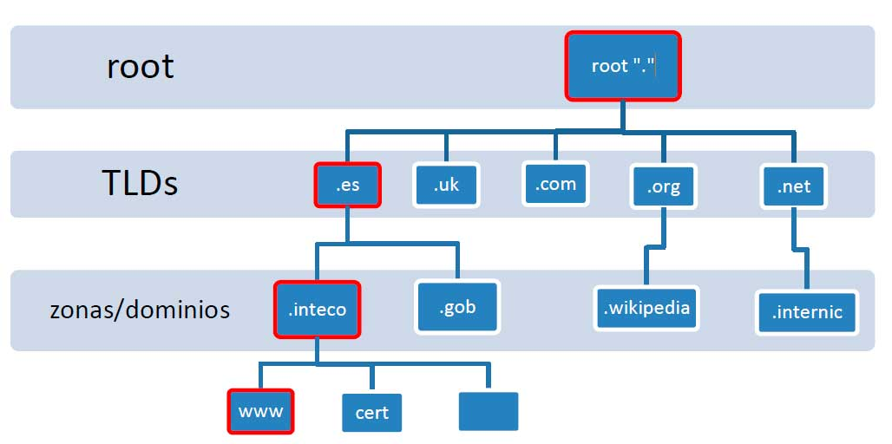

¿Qué es DNS?
El DNS ‘Domain Name System’ nos proporciona una forma de comunicarnos con dispositivos por internet sin tener que recordar todas las direcciones IPs.
Para ello, el DNS nos ayuda de la forma que a cada dirección IP le da un dominio ó conjunto de dominios únicos para poder acceder a él, sin tener que recordar la dirección del mismo.

Vemos como el dominio ‘Google.com‘ está asociado a una dirección IP ‘216.58.217.206’, donde el servidor DNS traduce dicho dominio a su ip correspondiente.
Jerarquía de dominios
Los dominios al igual que los sistema de ficheros de los sistemas operativos contienen una jerarquía.
|
 Dominios de segundo nivelPreceden al TDL, es el nombre que recibe la dirección IP al realizar la conversión por el servidor DNS.Está limitado a 63 caracteres (a-z) y 0-9, además puede hacer uso de guiones + el TDL. |
TDL (Top-Level Domain)El TDL es la parte más a la derecha de un dominio y va precedido por un punto , en el caso de google.com, el TLD sería ‘.com’.Encontramos dos tipos de TLDs, los gTDL ‘genéricos’ y los ccTDL ‘país’.
SubdominioSe encuentra a la izquierda del dominio de segundo nivel, se hace uso de un punto para separarlos.Por ejemplo, el dominio support.google.com, la parte support es el subdominio. Mismo limite que los dominios de segundo nivel, pero no puede ni empezar ni terminar con guiones ni usar el guion bajo ( _ ). |
Tipos de registros
El DNS puede ser usado para sitios webs y para otros fines, por tanto, existen varios tipos de registros DNS.
Registro AEstos registros son resueltos en direcciones IPv4.Registro AAAAEstos registros son resueltos en direcciones IPv6. |
Registro CNAMEEstos registros se resuelven en otro nombre de dominio y desde este se realiza otra solicitud DNS para resolver la dirección IP. |
Registro MXEstos registros se resuelven en la dirección de los servidores de correo electrónico para el dominio que estamos consultado.Vienen con una ‘flag’ de prioridad. |
Registro TXTEn él se puede almacenar datos basados en texto y tienen múltiples usos, como enumerar servidores que pueden enviar correos electrónicos (controlando así los correos falsos y spam). |
Solicitud DNS
Vamos a ver paso a paso que sucede a realizarse una solicitud DNS.
- Cuando solicitamos el nombre de un dominio, nuestra computadora primero comprueba en su caché si se ha accedido a la dirección previamente. Si no es así, se realizará una petición un servidor DNS recursivo.
- El servidor DNS recursivo es proporcionado por nuestro ISP. Este servidor contiene una caché que han sido buscados recientemente. Si el resultado se encuentra en ahí, se vuelve a mandar a nuestra máquina, si no se encuentra en la caché local, se busca la dirección en los servidores DNS root de internet.
- Los servidores DNS roots actúan como la columna vertebral de los DNS en internet. Su trabajo consiste en redireccionarnos a los servidores de dominios Top-Level
- El servidor TDL contiene registros para buscar el servidor DNS autorizado para responder a la petición DNS.
- El servidor DNS autorizado es el responsable de almacenar los registros DNS para un dominio en concreto y donde se realizará cualquier actualización a los registros DNS del nombre de dominio. Dependiendo del tipo de registro, el registro DNS será enviado de nuevo al servidor DNS recursivo, realizando una copia en la caché local para futuras peticiones.